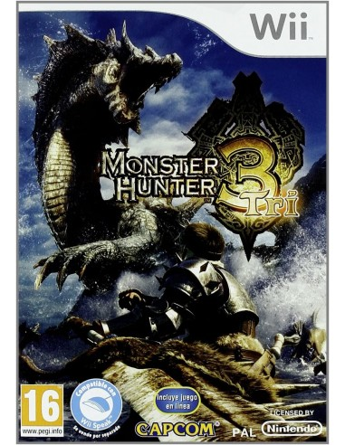

Introducción al juego
¿En que consiste el juego?
Monster Hunter Tri es un videojuego de acción y supervivencia desarrollado por Capcom. Fue lanzado originalmente para la consola Wii y es la tercera entrega de la franquicia Monster Hunter. El juego se desarrolla en un vasto mundo donde el jugador asume el papel de un cazador que lucha por defender a sus conciudadanos de los temibles monstruos que acechan la aldea.
Permite al jugador sacar el máximo partido al WiiMote y el nunchuck, aunque también es compatible con el mando clásico o pro. El juego ofrece una aventura cargada de gráficos de gran calidad y un entorno dinámico que está siempre en expansión. Además, se puede jugar tanto en modo individual como en modo multijugador.
Recibió críticas favorables y fue bien recibido por los jugadores. En Japón, el juego obtuvo una puntuación perfecta de 40/40 en la revista Weekly Famitsu, convirtiéndose en el undécimo juego en recibir esta calificación en la historia de la revista. Hasta 2012, Monster Hunter Tri había vendido más de 1,9 millones de copias en Wii.
Trama Principal
La trama principal del juego Monster Hunter Tri se centra en el papel del jugador como cazador que debe proteger a su aldea de los monstruos que la amenazan. A medida que el jugador avanza en el juego, se enfrentará a desafiantes criaturas y completará misiones para fortalecerse y adquirir mejores armas y armaduras. La trama se desarrolla en un vasto mundo lleno de peligros y secretos por descubrir.
Mecánicas y conceptos básicos
Poder de ataque: Cada arma tiene un poder de ataque específico, que determina el daño que inflige a los monstruos. Es importante tener en cuenta el poder de ataque al elegir y mejorar las armas.
Clases de armas: En Monster Hunter Tri, existen diferentes tipos de armas, cada una con su propio funcionamiento y mecánicas. Algunas de las clases de armas disponibles son: Gran Espada, Espada Larga, Espada y Escudo, Martillo, Lanza, Lanza Pistola, Hacha Espada, Ballesta Ligera, Ballesta Mediana, Ballesta Pesada.
Ataques aéreos:En Monster Hunter Tri, se introdujeron los ataques aéreos, que permiten a los jugadores montar a los monstruos y atacar desde arriba. Esta mecánica se ha convertido en una parte importante del juego y puede ser utilizada estratégicamente durante las batallas.
Captura de monstruos: En lugar de simplemente derrotar a los monstruos, en Monster Hunter Tri también es posible capturarlos. Para capturar a un monstruo, los jugadores deben debilitarlo y luego utilizar trampas y bombas tranquilizantes para asegurarlo.
| Monster Hunter Tri | ||
|---|---|---|
|  Portada principal |
||
| Informacion General | ||
| Desarrollador | Capcom | |
| Distribuidor principal | Nintendo | |
| Acerca del juego | ||
| Genero | Rol de accion | |
| Modos de juego | Un jugador, Juego En línea para 4 jugadores | |
| Clasificacion | PEGI 16 | |
| Datos del software | ||
| Motor utilizado | MT Framerwork | |
| Plataformas de lanzamiento | Nintendo Wii | |
| Fecha de lanzamiento | ||
| Comercializacion | ||
| Unidades comercializadas | 1900000 | |
| Fechas de lanzamiento | 1 de agosto del 2009 | |
| Juegos Relacionados | ||
| Monster Hunter 1 (2004) | ||
| Monster Hunter 2 (2006) | ||
| Monster Hunter 3 Ultimate (2013) | ||

- Encuesta de satisfaccion
- Siguenos en nuestras redes sociales:
-